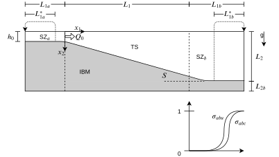
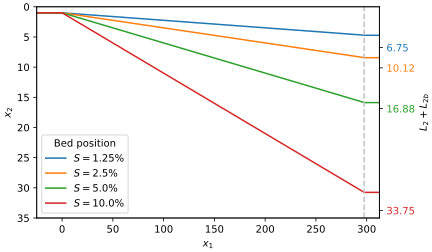

Computational Domain#
The computational setup, presented in Fig. 1 and adapted from Schuch [2020], is based on the previous work of Schuch et al. [2018], however, a few improvements are proposed. The test section (TS) is the region where the flow is analyzed. The bed slope \(S\) is included in the computational domain via an immersed boundary method (IBM), following the alternating direction forcing strategy proposed by Gautier et al. [2014].


Fig. 1 Schematic representation of the computational domain (not to scale). Spanwise coordinate \(x_3\) is perpendicular to the plane. It is divided in four sections: in gray, the tilted bed is inserted by the immersed boundary method (IBM); TS represents the test section, where the flow is analyzed; SZ\(_a\) represents the sponge zone upstream of TS, it provides a turbulent inflow; SZ\(_b\) represents the sponge zone downstream of TS, employed in order to damp the turbulence level and avoid reflections from the outflow boundary. The two coefficients \(\sigma_{abu}\) and \(\sigma_{abc}\), that are employed at SZ\(_b\), are shown for reference.#
Domain dimensions#
The streamwise extent of the domain is fixed for all cases: the recycling sponge zone SZ\(_a\) has length \(L_{1a} = 25\), the test section spans \(0 \leq x_1 \leq L_1 = 250\) and the outflow sponge zone SZ\(_b\) has length \(L_{1b} = 62.5\), discretized with \(n_1 = 1081\) mesh points. The bed becomes flat at \(x_1 = 297.5\), upstream of the outflow boundary (dashed line in Fig. 2).
The vertical extent, on the other hand, depends on the bed slope \(S\): the domain must be tall enough to contain the initial depth \(h_0 = 1\), the total drop of the ramp, and a bottom layer of thickness \(L_{2b}\) underneath it (inserted by the IBM). With a uniform vertical mesh spacing \(\Delta x_2 = 0.140625\), the number of points \(n_2\) is the smallest value supported by the solver’s mesh that fits these constraints:


Fig. 2 Bed position for each simulated bed slope \(S\), in the frame of
reference of the nondeformable free surface (\(x_2 = 0\)). The resulting
domain height \(L_2 + L_{2b}\) for each case is marked on the right
axis. The figure is generated by
domain_dimensions.py,
adapted from the original script used in the thesis of
Schuch [2020].#
\(S\) [%] |
\(L_2\) |
\(L_{2b}\) |
\(n_2\) |
|---|---|---|---|
1.25 |
4.71875 |
2.03125 |
49 |
2.5 |
8.4375 |
1.6875 |
73 |
5.0 |
15.875 |
1.0 |
121 |
10.0 |
30.75 |
3.0 |
241 |
Sponge zones#
Two sponge zones are employed for different reasons. Firstly, SZ\(_a\) is located upstream of the test section in order to provide a turbulent inflow condition by means of a recycling technique. It eliminates problems with transition to turbulence and the re-circulation bubble near the inlet. To this end, the inflow boundary condition (where \(x_1 = -L_{1a}\)) for the velocity field is defined as
Furthermore, a forcing term is designed to compensate the viscous dissipation and maintain a constant flow rate at the recycling zone. It is added to the right-hand side of the momentum equation (2) and written as
where \(V_{sza}\) is the volume comprehended by sponge zone A.
Secondly, SZ\(_b\) applies near the outflow boundary an intrinsic profile for the streamwise velocity \(u_1(x_i)\), in order to vanish turbulence levels. As suggested by Henniger et al. [2010], the numerical domain should be long enough to promote the deposition of the entire suspended material, however, that is very computationally demanding. Following Schuch et al. [2018], an absorption coefficient is defined in order to remove suspended concentration upstream of the outlet, significantly decreasing computational costs.
Three hyperbolic tangent functions are defined in order to guarantee a smooth transition near the outflow boundary. A transition in time \(\sigma_{abt}\) is defined as a function of the time when the front reaches the outlet \(t_{ab}\) and the size of the time window used for the moving time average \(t_{size} = 3{,}000 \Delta t\). As a consequence, SZ\(_b\) only takes place after the front leaves the computational domain and the flow is in a quasi-steady state. Then, two spatial coefficients, \(\sigma_{abu}\) and \(\sigma_{abc}\), are used for streamwise velocity and particle concentration, respectively. They are written as
besides that, they are schematically presented in Fig. 1. In order to impose SZ\(_b\) into the governing equations, two forcing terms are defined, one for the streamwise velocity \(f_{abu}\) and another for the suspended concentration \(f_{abc}\). They are written as
and respectively added to the right-hand side of the momentum equation (2) and the scalar transport equation (3). The vertical streamwise velocity profile \(u_1^*(x_2)\) is obtained by means of a spanwise average and a moving average in time at a reference position, upstream of the outflow boundary.
Boundary conditions#
A nondeformable water surface is assumed for the top boundary condition (where \(x_2 = 0\)), which is described by a no-flux condition for the particle concentration and a free-slip condition for the velocity field, following Nasr-Azadani et al. [2013],
At the solid-fluid interface \(x_{2r}\), a convective outflow condition reproduces the particle deposition [Necker et al., 2002] and a no-slip condition is used for the carrier fluid:
The inflow condition for the velocity field was defined in Equation (5). Besides that, a vertical concentration profile is proposed
notice that it is in agreement with the top boundary condition for the scalar field (9). It is then normalized and applied to the entire recycling zone (SZ\(_a\), where \(x_1 < 0\)), as follows
Regular 1-D convection equations are employed at the outflow boundary (\(x_1 = L_1 + L_{1b}\)) for the scalar and for the velocity
Notice that the convective equations are only relevant during the transient part of the simulation, while \(\sigma_{abt} < 1\), from (7). A periodic boundary condition is assumed for concentration and velocity in the spanwise direction
Initial condition#
For the initial condition (when \(t = 0\)) the domain is defined as fresh water (\(c = 0\)) at rest (\(u_i = 0\)). However, in order to implement the recycling technique, the velocity field is initialized at SZ\(_a\) (where \(x_1 \leq 0\) and \(x_2 \leq h\)) with white noise (1% of amplitude), in addition to a vertical profile for the streamwise velocity